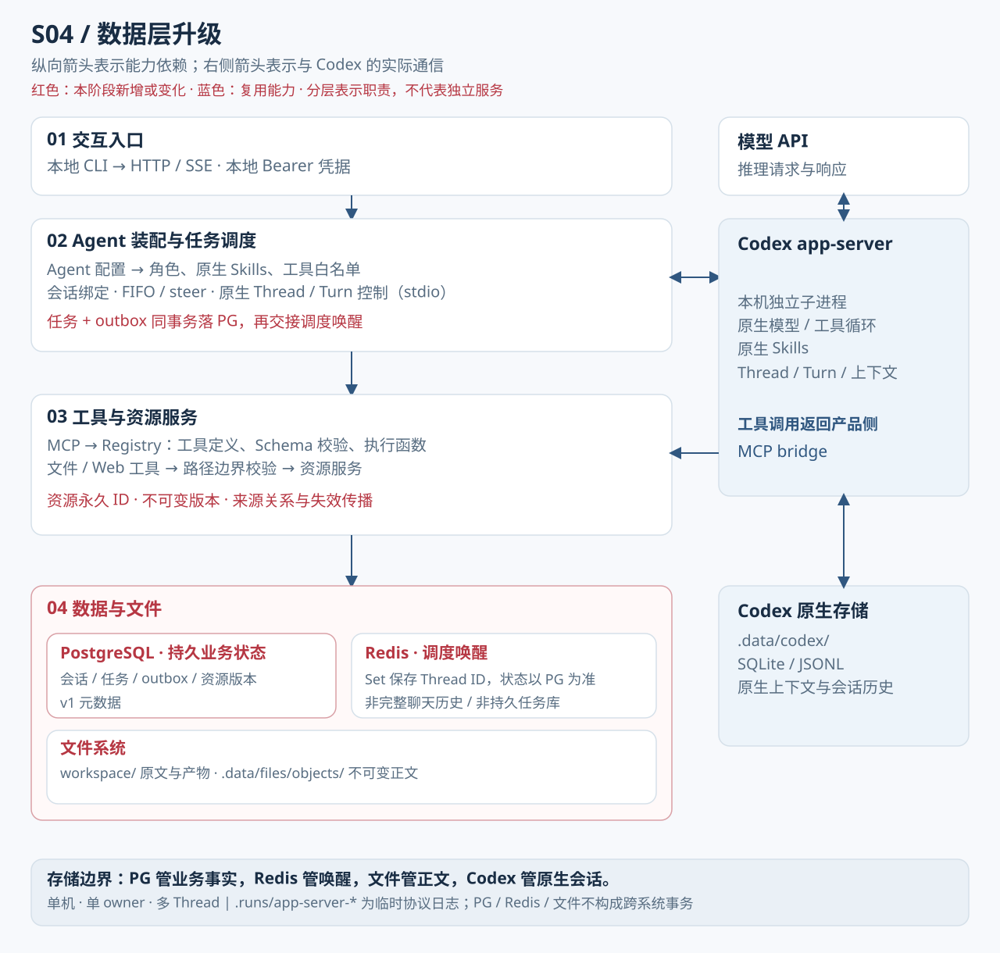
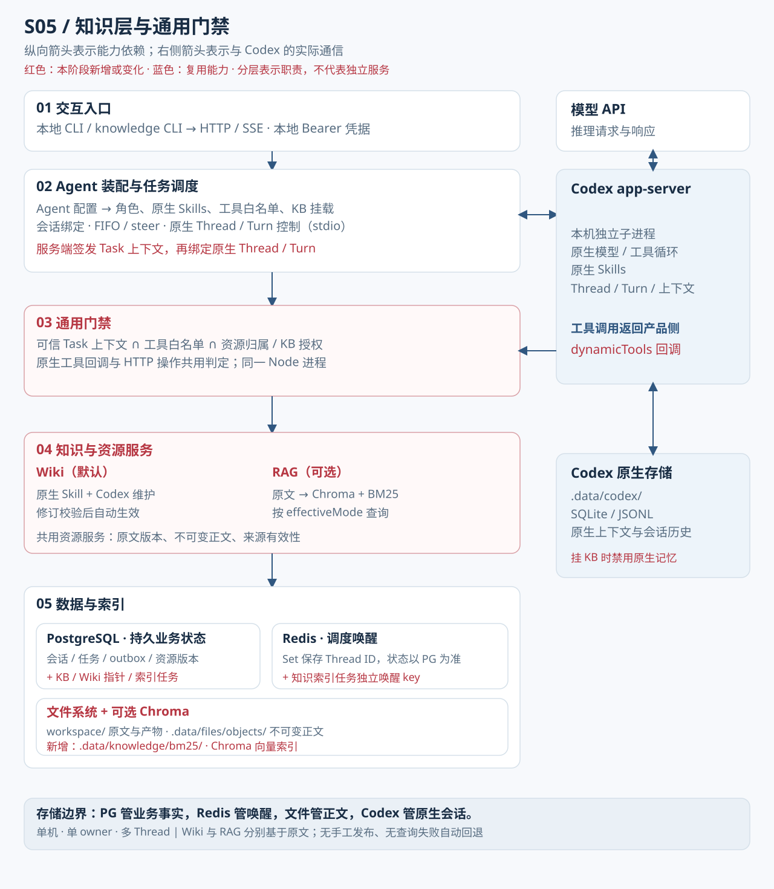

单轮：打通执行引擎
控制台发问后，谁真正调用了模型？从 stdio 到 turn/completed，逐层拆解一次请求的完整生命周期。
全景：一次问答背后的五层结构
打出命令到模型返回结果，中间经过五个清晰可辨的层次。先看整体，再逐层钻入。
关键认知
Node.js 不直接调用模型 HTTP 接口。它是编排客户端，Codex 才是真正与远端模型通信的执行引擎。两者通过 stdio 连接。
邮局比喻：initialize → initialized
把这套通信想象成一个邮局系统：Node 是寄件人，Codex 是邮局，模型服务是收件目的地。寄信前必须先"在柜台登记开户"——这就是协议握手。
Node 调用
child_process.spawn，把 Codex App Server 作为子进程拉起。此刻"邮局开门"，但还没有任何账户。
Node 通过 JSON-RPC 2.0 发送
initialize 方法。Codex 返回初始化响应，客户端等待这一步成功。
Node 再发一条单向通知
initialized（无需回复），告知 Codex"我已收到你的初始化响应，正式开始"。握手完成。
Thread 与 Turn：往来档案与一次寄送
Thread 是一个往来档案，Turn 是其中一次寄送。单轮 Demo 只新建一个档案、完成一次寄送，但架构已经为多轮做好了准备。
thread/start → 拿到 threadId，注入基础指令
turn/start
turn/completed，提取回答文本
事件先到缓存——关键时序细节
turn/start 触发的事件通知可能在 RPC 响应（含 turnId）返回之前就到达 stdio。代码先建立监听缓冲区，收到 turnId 后再回放已缓存的匹配事件，防止漏掉早到的通知。
真实代码：runTurn 的核心逻辑
以下是 s01 源码中 runTurn 函数的实际片段，展示先分配本轮状态、再发送请求的顺序。
if (!threadId) await startThread();
const turn = { threadId, id: null, answers: new Map(), buffer: [], completed: Promise.withResolvers() };
turn.completed.promise.catch(() => {});
activeTurn = turn;
const timer = setTimeout(() => fail(new Error("App Server 本轮调用超时；已停止连接，实际执行状态需检查日志，不自动重发。")), launch.timeoutMs);
console.log("正在等待模型回复……");
try {
const result = await request("turn/start", {
threadId, input: [{ type: "text", text: prompt, text_elements: [] }]
});turn 对象：在内存中为本轮预分配状态槽——answers 存模型回答，buffer 缓存早到的通知，completed 是一个手动控制的 Promise。
activeTurn = turn：把当前轮次注册为"活跃轮次"，后续收到的通知事件都会先检查是否属于这里。
setTimeout + fail：超时保护。如果模型长时间不回复，主动断开并报错，不无限等待。
request("turn/start", ...)：通过 JSON-RPC 发起本轮任务，prompt 是用户输入文本。
路径说明
完整文件：stages/s01-single-turn/05-app-server.mjs，第 145–173 行。runtime.mjs 负责准备 .runs 运行目录，05-app-server.mjs 管理通信生命周期。
组件群聊：一次请求的接力棒
以下对话模拟各组件之间的协作过程，属于教学动画，非真实系统通信。
版本边界、实践命令与知识测验
s01 → s02：增加 FIFO 输入缓冲与 /resume 会话恢复，Thread 可跨启动复用。
s03+：引入 HTTP 服务层与配置驱动 Agent，不再是纯 CLI 模式。
本系列模型调用要求 Responses API 规范，基础 chat/completions 接口无法直接适配。Responses API 是执行引擎对远端服务的要求。
cd stages/s01-single-turn && npm citest -f .env || cp .env.example .env（填入 API Key/URL/Model）npm run check（仅校验本地配置，不发网络请求）npm start（默认提示词）npm start -- "你的问题"（自定义输入）npm test（离线模拟测试）→ 打开 s01 命令与教学模拟
回答采用整段聚合输出，不支持逐 token 流式打印。
features.memories=false：关闭跨会话记忆，但本次会话日志仍可持久化。工作目录仅做应用层路径过滤，非操作系统级沙箱。
你删除了请求前的缓冲逻辑，偶尔明明有完成通知却一直等待。哪项解释能定位问题？
配置校验通过，但远端模型连接失败。沿着实际调用链，你应检查哪一层发出的请求？
你重写了连接启动流程，想在发出首条用户任务前确认通信已就绪。应采用哪种顺序？
多轮：让会话延续
同一本笔记本写下多页——理解 Thread 与 Turn 的层级、FIFO 缓冲的真实含义，以及 /resume 与长期记忆的本质区别。
全景：从单轮到多轮的三个关键变化
s02 在 s01 基础上做了三处结构性扩展，先看差异再逐步拆解。
谁保存历史？
多轮上下文由本机 Codex App Server 原生持久化。Node 端不维护历史消息数组，也不向模型重发历史，这些工作完全由 Codex 内部管理。
数据流：用户输入到模型回答的 7 步旅程
以下动画模拟多轮模式下一条用户输入的完整流转路径，属于教学模拟，非真实推理过程。
FIFO 是排队，不是推理
FIFO 输入缓冲是用户侧的节奏控制机制，不负责模型内部的推理循环。
用户消息入队、出队；决定何时发出下一个 turn/start，不决定模型如何推理。
处理一个 Turn 内的模型推理与工具调用往返；不管理下一条用户输入的排队。
FIFO 决定的是"你的第三条消息要等第二条处理完才能发出"，而不是模型"思考"的步骤数。
从执行机制看，一个 Turn 可包含多次推理与工具往返，由 Codex 的内部循环控制。本阶段的工具能力受限，不能把这种机制理解为已开放外部工具。
结论：FIFO 是外部排队，ReAct 是内部循环，两者分工不同。
resume 恢复会话 vs 记忆注入：两件不同的事
这是最容易被混淆的概念对。用笔记本比喻：resume 是"重新翻开一本旧笔记本继续写"，记忆是"把多本笔记的精华摘录写到新本子的扉页"。
2. 显示编号列表，用户输入数字选择
3. 发送
thread/resume RPC，Codex 恢复该 Thread 的原生历史4. 后续 Turn 在此 Thread 上继续，上下文连贯
s02 不开启跨会话记忆（
features.memories=false），/resume 恢复的是历史上下文，不是记忆注入。
const selected = /^\d+$/.test(value) ? threads[Number(value) - 1] : undefined;
if (!selected) { console.log("请输入列表中有效的会话编号。"); continue; }
if (selected.id === threadId) { console.log("这就是当前会话，可以继续聊天。"); return false; }
await ensureThreadDirectory(root, selected.cwd);
const result = await request("thread/resume", {
...threadOptions, threadId: selected.id, cwd: selected.cwd, excludeTurns: true
});
selectThread(result);
console.log("已恢复会话：", safeTitle(selected.name || selected.preview));
console.log("后续消息沿用原会话历史，使用上面显示的当前配置模型。");数字校验：用正则确认用户输入是纯数字，再从 threads 数组取对应项，防止无效输入。
相同会话检测：如果选择的就是当前 Thread，直接提示继续，不重复 resume。
thread/resume + excludeTurns：通知 Codex 恢复该 Thread，excludeTurns: true 表示不在响应中回传完整历史 Turn 列表，减少传输量。
模型说明：恢复后使用的是"当前配置的模型"，不保证与历史 Turn 使用的模型版本完全一致。
路径说明
完整文件：stages/s02-multi-turn/05-app-server.mjs，第 239–252 行。会话元数据索引由本地存储维护，Codex 原生历史由 Codex 自身持久化，两者分工明确。
源码对照：s02 的 runTurn 与 s01 的相似与差异
s02 的 runTurn 结构与 s01 高度相似，关键在于 Thread 复用逻辑和超时错误提示的变化。
async function runTurn(prompt) {
if (!threadId) await startThread();
const turn = { threadId, id: null, answers: new Map(), buffer: [], completed: Promise.withResolvers() };
turn.completed.promise.catch(() => {});
activeTurn = turn;
const timer = setTimeout(() => fail(new Error("App Server 本轮调用超时；已停止连接，可重启后 /resume。")), launch.timeoutMs);
console.log("正在等待模型回复……");
try {
const result = await request("turn/start", {
threadId, input: [{ type: "text", text: prompt, text_elements: [] }]threadId 复用：if (!threadId) await startThread()——若已有 Thread 则跳过创建，直接在同一 Thread 内发起新 Turn，这是多轮连续对话的核心。
超时提示变化：s02 的超时错误信息增加了"可重启后 /resume"——提示用户会话可恢复，不必从头开始。
buffer 机制相同：早到事件的缓冲与回放逻辑与 s01 完全一致，两版复用了同一解决方案。
版本边界、实践命令与知识测验
s02 → s03：增加 HTTP 服务层、配置驱动 Agent、MCP 工具协议、沿用 FIFO，并增加持久化任务状态与重启暂停。
s02 仍无独立 HTTP 服务，不提供网页连接入口。
cd stages/s02-multi-turn && npm citest -f .env || cp .env.example .env（填入 API Key/URL/Model）npm run check（本地校验，不连网）npm start（进入交互模式）验证多轮：输入“记住代号是蓝鲸”→回答后再问“代号是什么”；核对同一 Thread ID、不同 Turn ID，检查回答而非预设成功
验证恢复：/exit 退出后重启，输入 /resume
npm test（离线模拟测试）→ 打开 s02 命令与教学模拟
回答仍为整段聚合输出，不支持流式打印。
未接入 MCP 协议，不支持外部工具调用（s03 起引入）。
单机单 owner 单 Agent，不支持多账户或多 Agent 编排。
你准备给会话增加“继续上次聊天”，却在 Node 的元数据里找不到正文。该去哪里恢复？
用户连续输入三条问题，第二条等了很久；他希望调整 FIFO 来减少单轮工具调用。哪种判断正确？
用户 /resume 后接着聊旧话题成功，却发现新会话不记得旧代号。该如何解释？
配置：装配一个 Agent
如何让同一套服务代码支持不同角色、工具和权限——答案是配置驱动。从 JSON 装配文件到工具白名单，逐层拆解 Agent 的组装逻辑。
全景：装配工作台的六个插槽
想象一张装配工作台：服务代码是台架，配置文件是装配清单，六个插槽决定 Agent "是谁、能做什么、能碰什么"。
唯一装配入口
JSON 文件 agents/writing-agent.json 是配置的唯一可编辑入口，遵循 schemaVersion: "1.0"。未知字段直接拒绝，缺少必填字段也会报错，保证运行状态与配置严格一致。
四个核心概念：装配台的底层语言
读懂配置文件前，先理解这四个词各自指的是什么，以及它们之间的边界。
schemaVersion: "1.0" 声明了当前配置遵循的 Schema 版本。加载器按 Schema 校验所有字段：多余字段拒绝，缺失必填字段报错。Schema 是配置的"格式合同"。
build() 方法生成一个带版本号的 registry，其中包含当前版本的工具规格。list 和 call 都受工具白名单约束，Registry 是工具的"电话簿"。
mcp-server.mjs 提供一个本地 HTTP MCP 服务端，Codex 通过 MCP 协议发现并调用工具。一个 MCP 服务端承载本项目的工具，不是每个工具单独一个服务。
tools.allow 单独控制——Skill 里提到某工具，不代表该工具自动被授权。两者必须分开配置。
方法 vs 授权：最重要的边界
Skills 告诉模型怎么做，tools.allow 决定模型能做什么。即使 Skill 里描述了"调用 write_file 保存结果"，如果 allow 列表里没有 write_file，模型调用时仍会被拒绝。
解剖真实配置文件
以下是 writing-agent.json 的实际片段，展示装配工作台中的角色、工具、资料与执行配置。
{
"schemaVersion": "1.0",
"agent": {
"id": "writing-assistant",
"version": "1.0.0",
"instructions": "roles/writing-assistant.md",
"skills": [],
"tools": { "allow": ["list_files", "read_file", "write_file", "search_web", "read_webpage"] },
"dataBindings": [ { "sourceRef": "originals", "actions": ["read"], "methods": ["files"], "required": true },
{ "sourceRef": "research", "actions": ["read", "create"], "methods": ["files"], "required": true },
{ "sourceRef": "drafts", "actions": ["read", "create"], "methods": ["files"], "required": true },
{ "sourceRef": "articles", "actions": ["read"], "methods": ["files"], "required": true }
],
"executionRef": "restricted-local",
"memory": { "use": false, "contribute": false },
"outputs": { "directory": "outputs", "formats": ["md", "txt"], "writeMode": "create-only", "requiredChecks": ["file-exists", "format"] }
},schemaVersion：版本声明，加载器据此选择校验规则，未知版本直接拒绝。
instructions：角色正文文件路径，不是内联文本——角色内容与配置结构分离，易于独立维护。
tools.allow：5 个工具名组成白名单，list 和 call 都受此约束，模型不可自行扩权。
dataBindings：四个资料源，originals 和 articles 仅 read，research 和 drafts 可 read+create。articles 指向 outputs 目录，是来源绑定别名，不是新目录。
executionRef：引用 bindings.executions 中的策略条目，当前为 restricted-local（只读沙箱，禁止原生 shell 和文件写）。
memory.use/contribute：两者均 false，s03 不读取也不贡献跨会话记忆。
工具注册与 MCP 服务：ToolManager 的工作方式
ToolManager 是工具层的核心，负责把配置里的 allow 列表变成 Codex 可调用的 MCP 接口。
export class ToolManager {
constructor({ config, runtime, log, redact, files, agent, boundary = new ExecutionBoundary() }) {
Object.assign(this, { config, runtime, log, redact, files, agent, boundary });
this.configFile = codexPaths(config.root).configFile;
this.token = randomBytes(32).toString("hex");
this.status = "loading"; this.error = null;
Object.assign(boundary, { pending: () => Boolean(this.pending), unavailable: () => this.closed || this.broken,
refresh: async () => { try { this.scan(); } catch (error) { this.pending = null; this.report(error); } }, apply: () => this.apply() });
} async open() {
this.registry = await this.build(readToolSources(this.config.root));
this.server = await createMcpToolServer({ token: this.token, redact: this.redact });
this.server.registries.set(this.registry.version, this.registry);
this.config.launch.env = { ...this.config.launch.env, PROJECT_MCP_TOKEN: this.token };
this.status = "ready";
return this;
}随机 token：每次启动生成 32 字节随机 token，作为 MCP Bearer 令牌写入 Codex 环境变量，防止未授权调用。
build() → registry：扫描工具源，构建带版本号的 Registry 快照，存入 server.registries Map。
createMcpToolServer：启动本地 HTTP MCP 服务端，一个服务承载本项目的工具，不是一工具一服务。
ExecutionBoundary：边界锁模块注入 ToolManager，保证工具刷新不在任务中途发生，维护状态一致性。
描述符版本机制与 Workspace 边界
配置变更如何被检测？文件操作的边界在哪里？这两个问题是排障时最常碰到的。
每次服务启动，系统生成 Agent 描述符，写入
.data/agent-descriptors/，包含角色哈希、Skill 版本、工具版本。
新建 Thread 时，其描述符版本写入
.data/thread-agents.json。恢复旧 Thread 时，先比对当前描述符哈希与记录值是否一致。
配置、角色或 Skill 文件变更后先重启服务；如果新描述符与旧会话绑定不同，系统拒绝恢复并提示用户执行
/new 新建会话，不自动迁移旧 Thread。
文件服务（files.mjs）自身执行权限边界，不依赖 Codex cwd 约束。工具快照工厂注入文件服务，无跨快照引用，防止历史快照影响当前操作。
业务状态存 JSON，不存数据库（s03 专属）
s03 不依赖 PostgreSQL 或 Redis。业务任务状态（messages.json）使用原子替换写入：先写临时文件，再 rename 到目标路径，防止写一半损坏。数据库层能力从 s04 引入。
"bindings": {
"workspaceDir": "../workspace",
"skills": {},
"sources": {
"originals": { "type": "files", "root": "inputs" },
"research": { "type": "files", "root": "research" }, "drafts": { "type": "files", "root": "drafts" },
"articles": { "type": "files", "root": "outputs" }
},
"executions": { "restricted-local": { "sandbox": "read-only", "approvalPolicy": "never", "nativeShell": false, "nativeFileWrite": false } }
}workspaceDir：Agent 的工作根目录，Thread 的 cwd 设为此路径，跨重启保留。
articles → outputs：articles 是 outputs 目录的来源绑定别名，不是独立目录。list_files 只返回已授权路径的文件，无法通过 articles 访问 outputs 以外内容。
restricted-local：沙箱策略条目，禁止原生 shell 和文件写，approvalPolicy: never 表示不通过弹出审批来申请额外执行权限；工具仍受白名单与文件服务边界约束。
版本边界、实践命令与知识测验
s03 → s04：数据层升级，引入 PG/Redis，业务状态从本地 JSON 迁移到数据库。
s03 是独立源码快照，不共享 app/ 的运行状态，监听
127.0.0.1:4313，本机开发，无多用户公网授权。
cd stages/s03-agent-core && npm citest -f .env || cp .env.example .env（填入 API Key/URL/Model，端口默认 4313）npm run check（本地配置校验）npm run server（启动服务，s03 无需数据库迁移）另开终端：
npm run chat验证工具：在 chat 中输入
/toolsnpm test && npm run test:codex-tools→ 进入 s03 练习
Skill 仅验证原生文本指令型；带脚本/附件的工作流不保证运行。
记忆链路读/提炼限制已测；合并摘要当前 blocked，完整链路未最终验收。
新增工具需同时配置 allow 并受控重启，不支持热增不重启。
文件服务限制路径、扩展名、大小和操作：默认 .md/.txt、256 KiB，只创建不覆盖，不跟随软链接或硬链接；不能仅凭 cwd 判断访问权限。
你给 Skill 新增“用 write_file 保存文章”，模型却仍被拒绝。首先应检查哪一项授权？
你修改 Agent 角色并重启了服务。现在 /resume 旧 Thread，描述符版本不同，应如何处理？
你新增第六个已授权工具，担心还要开第六个端口。按本项目结构，应该怎样接入？
数据：状态有据可查
从单文件 JSON 到关系型事务——理解 PG 账本、Redis 提醒铃、不可变 blob 与原生历史各司其职，读完能向 AI 程序员准确定位状态与权限问题。
四层架构：谁存什么、谁唤醒谁
s03 用单文件 JSON 管理业务状态，Codex 原生历史独立维护；已具备 FIFO 排队与重启时暂停不确定执行的能力。s04 在此基础上新增关系事务与内容版本追踪。 s04 把存储拆成四块各自负责，就像一家公司把财务账本、门卫铃、文件柜、原始档案交给四个专职部门。

HTTP / CLI 收消息，校验本地凭据；返回任务 ID 与事件。
读取 Agent 配置，写 tasks + outbox；领取任务并驱动 Codex。
接 MCP 工具调用，执行读写；输出正文 blob 与资源版本记录。
PG 管业务事实，Redis 管唤醒，blob 管正文；原生历史另由 Codex 管理。
.data/files/objects/。内容写入后不覆盖，版本变了就是新文件。PG 账本：任务与调度出口同事务写入
想象银行转账：从 A 账户扣钱和向 B 账户加钱必须同时成功或同时失败，不能只做一半。 s04 把「写任务」和「写调度出口」绑进同一个 PG 事务——服务崩溃时，账本要么两条都有，要么两条都没有，不会出现任务存在但调度出口丢失的情况。
源码：stages/s04-data-layer/server/modules/data/jobs.mjs:75–81
await this.wake(job.threadId, client);
await this.query(
`UPDATE agent_data.conversations SET name=CASE WHEN name='' THEN $4 ELSE name END,updated_at=now()
WHERE instance_id=$1 AND owner_id=$2 AND id=$3`,
[job.threadId, job.text.slice(0, 100)],
client,
);第 1 行：wake 用同一事务 client 写 outbox；前面的任务写入也共享这个事务。
第 2–4 行：更新当前 owner 的指定会话；已有名称保留，空名称才采用任务原文。
第 5–7 行：只取原文前 100 字符作为候选会话名，并把同一事务连接传给 query。
tasks.text 只存用户任务原文（最多前 100 字符同步到会话名）。完整模型回复与工具历史不在 PG，由 Codex 原生存储管理。向 AI 程序员描述问题时，说"任务原文在 PG tasks 表，模型历史在 Codex 原生存储"是准确的表达。
| 表 | 存什么 | 不存什么 |
|---|---|---|
tasks |
任务原文、状态、模式、Thread 归属 | 完整模型回复、工具调用历史 |
outbox |
以 Thread 为键的调度出口、generation 号 | 任务 ID 列表（不是队列） |
resource_versions |
sha256、文件路径、版本元数据 | 文件正文（正文在 blob） |
conversations |
会话、绑定的 agent 版本 | Codex 原生对话消息 |
Redis 提醒铃：Set 唤醒，不是任务队列
Redis 在这里扮演的是"门铃"，而不是"信箱"。有人按铃（sAdd），调度器就去 PG 账本里按顺序领取；铃声本身不携带任务详情，也不保证顺序。
任务的权威顺序和状态，永远在 PG。
源码：stages/s04-data-layer/server/modules/data/queue.mjs:58–66
const rows = await this.jobs.deliveries(); // Database failure stops execution, Redis failure only delays dispatch.
for (const row of rows) {
try {
await this.commands.sAdd(this.key, row.thread_id);
} catch {
this.healthy = false;
return;
}
await this.jobs.delivered(row);第 1–2 行：从 PG 取待投递记录，并逐条处理；数据库失败会中断，Redis 失败只延迟派发。
第 3–4 行：sAdd 只放入 Thread ID；Set 去重仍留在集合中的 ID，不代表任务只执行一次。
第 5–8 行：Redis 失败就标记不健康并退出；尚未确认的 outbox 记录可在后续补投。
第 9 行：Redis 写入成功后，才确认本条调度出口已投递。
sAdd / sPop 操作。追踪一次完整任务闭环
以下用角色对话模拟一条任务从用户提交到完成的完整路径，帮你在脑海里建立各组件的协作顺序。 动画仅为教学模拟，不执行真实推理或数据库操作。
tasks.status——queued 说明还没被领取（同时检查会话是否暂停、是否有前序任务，以及 Redis 健康）；unconfirmed 说明执行中重启了，需人工决策；completed 说明正常完成，按任务的实际输出路径检查产物。
不可变 Blob：内容寻址与来源追踪
sha256 是内容指纹，正文按指纹命名保存。内容改动会生成新 blob，已登记版本不被覆盖；这不等于承诺永久保留。 这让系统能追踪“摘要声明引用的是 report.md 哪个版本”；读取或校验发现原文变化后，依赖链会传播失效。
write_file 只创建新路径，已有路径会被拒绝，即使内容相同。底层 blob 可按内容指纹复用；这是不同层次的规则。.data/files/objects/<sha256>.txt——无子目录，所有版本平铺在同一目录。.data/codex/ 是 Codex 原生存储，由 Codex 管理，主进程不读写。dependencies 表记录版本依赖，source_versions 声明来源。这是声明，不证明模型语义引用完全——AI 可能引用了未声明的内容。resource_versions 之间没有跨存储事务保证。PG 内部操作是原子的；跨文件系统与数据库则不是。stages/s04-data-layer 中完成依赖安装、环境配置、PG/Redis 启动、npm run data:migrate 与 npm run server 后执行，练习场景入口见 互动练习。
npm run data:check
docker compose exec postgres psql \
-U agent -d agent_s04 \
-c "SELECT id, status, substring(text,1,60) \
FROM agent_data.tasks \
ORDER BY created_at DESC LIMIT 5;"npm run data:check：运行内置检查脚本，验证 PG 连接是否正常、schema 表结构是否完整、Redis 是否可达。
docker compose exec postgres psql：进入 Docker 容器内的 PostgreSQL 命令行，以 agent 用户连接 agent_s04 数据库。
SELECT id, status, substring(text,1,60) FROM agent_data.tasks：查询最新 5 条任务记录，显示 ID、状态、任务原文前 60 字符。用于排查任务是否入队、是否卡住、是否变为 unconfirmed。
应用场景测验
以下三道题考察你能否在真实场景中定位问题、做出判断。每题只有一个最准确的答案。
场景一：一条新任务已提交 PG 事务，尚未领取，Redis 唤醒投递却失败了。你该如何判断这条任务是否丢失？
场景二：一位 AI 程序员告诉你某条任务的 status 是 unconfirmed，问你该怎么处理。你会如何解释这个状态，以及下一步该做什么？
场景三：用户反映"AI 回复了一些内容，但我不知道它具体说了什么，PG 里查不到"。你如何向 AI 程序员解释这是正常行为，并指出正确的查询位置？
知识：可用且有边界
从散落文件到结构化 Wiki，从各自判断到统一门禁——Agent 如何安全地"知道"正确的事。
架构总图：s05 新增了什么
s04 已经能可靠存储业务数据并调度任务。s05 解决两个新问题：让 Agent 在本机维护结构化知识库，并以统一门禁拦截所有工具路径。图左五层承载整体逻辑，图右 Codex 原生运行时通过 dynamicTools 与 03 层通信，而非直接暴露 MCP。

/messages；knowledge CLI 命令；SSE 流响应。新增 knowledge 子命令。agents/*.json；schemaVersion: 1.1 新增 knowledge[]，声明 kbId、mode、actions。路径绑定指定 sourceRoot 与 wikiRoot；写 task + outbox 同事务；dynamicTools 回调将工具调用路由至 03 层门禁。03 层：通用门禁——谁能调哪个工具
门禁是同进程模块，不是网络服务。Codex 每次工具调用都经由 RPC envelope 进入此处，身份来自服务端签发的任务上下文，不依赖模型自称。权限判定按以下四关依次过滤，任意一关不过即返回 FORBIDDEN。
| 关卡 | 检查内容 | 来源 |
|---|---|---|
| ① 上下文有效 | 任务仍运行中、上下文未被 abort |
服务端 AbortController |
| ② 工具白名单 | 工具名在 Agent 配置声明的允许列表中 | agents/*.json 声明 |
| ③ 资源所有权 | 目标资源属于当前任务的 data.scope |
服务端签发，非模型自称 |
| ④ KB 挂载 + action | knowledge[] 中挂载且 actions 包含当前操作；maintain 任务才能写 Wiki |
Agent 定义 + 任务上下文 |
来自 server/modules/permissions/index.mjs 的真实代码展示 mount() 如何检查挂载、操作授权与任务维护范围；上下文在任务开始时签发，结束后撤销。
源码：stages/s05-knowledge-layer/server/modules/permissions/index.mjs:51–57
mount(kbId, action = 'read') {
const context = this.current();
const mount = (this.agent.definition.agent.knowledge || []).find(m => m.kbId === kbId);
if (!mount || !mount.actions.includes(action)) denied();
if (action !== 'read' && context.kind === 'task' && context.maintenanceKb !== kbId) denied();
return mount;
}第 1–2 行：取得服务端签发且仍有效的当前上下文。
第 3–4 行：在 Agent 挂载配置中找这个 KB；缺挂载或缺 action 都拒绝。
第 5 行：task 的非 read 操作，还要 maintenanceKb 与目标库一致。普通对话没有维护范围。
第 6–7 行：校验通过才返回挂载配置；maintain 也仍需对应 action 授权。
maintenanceKb 为 null，因此 kb_submit_revision（写 Wiki）永远被拒绝。research/<kbId>/wiki 路径上的 read_file/write_file 同样被门禁拒绝，必须用 kb_* 工具经 04 层操作。04 层：三类任务——Chat、Maintain、Index 各做什么
理解这三类任务是排查知识问题的关键。普通 chat 与 maintain 任务通过 Codex 执行，任务记录存于 tasks 表；index 任务由 KnowledgeWorker 执行，任务记录存于 knowledge_jobs 表，并通过独立的 Redis key 唤醒。
上下文：
kind: 'task'，maintenanceKb: null可用 KB 工具：
kb_list、kb_read、kb_search（read action）禁止：
kb_submit_revision（写 Wiki）存储：写
tasks + outbox 同事务，Redis 唤醒
npm run knowledge -- maintain <kbId> <提示>上下文：
kind: 'task'，maintenanceKb: <kbId>额外权限：
kb_submit_revision（需 update action）输出：写
wiki_pages / wiki_versions，current_version 原子切换注意：存于
tasks 表，不是 knowledge_jobs
npm run knowledge -- index <kbId>执行者：KnowledgeWorker（不是 Codex）
输出：staging Chroma collection + BM25 JSON；两边就绪后 PG 切
index_revision存储：
knowledge_jobs 表，Redis 独立 key 唤醒注意：这是独立的 knowledge_jobs，不在 tasks 表
Wiki 页面提交流程来自 server/modules/knowledge/index.mjs：
源码：stages/s05-knowledge-layer/server/modules/knowledge/index.mjs:153–160
await this.sourceVersions(kb, source_versions, client);
await this.query(`INSERT INTO agent_data.wiki_pages(instance_id,kb_id,slug) SELECT $1,$3,$4 WHERE $2::uuid IS NOT NULL ON CONFLICT DO NOTHING`, [kbId, slug], client);
const page = (await this.query('SELECT * FROM agent_data.wiki_pages WHERE instance_id=$1 AND kb_id=$3 AND slug=$4 AND $2::uuid IS NOT NULL FOR UPDATE', [kbId, slug], client)).rows[0];
if (page.current_version !== expectedVersion) fail('Wiki 已被其他更新修改，请读取最新版本。', 'VERSION_CONFLICT');
await this.query(`INSERT INTO agent_data.wiki_versions(instance_id,id,kb_id,slug,revision,blob,sources)
SELECT $1,$3,$4,$5,$6,$7,$8 WHERE $2::uuid IS NOT NULL`, [id, kbId, slug, body.revision, body.blob, JSON.stringify(source_versions)], client);
this.gate.check('update', { kbId });
await this.query('UPDATE agent_data.wiki_pages SET current_version=$5 WHERE instance_id=$1 AND kb_id=$3 AND slug=$4 AND $2::uuid IS NOT NULL', [kbId, slug, id], client);第 1–3 行：校验来源、确保页面行存在，再锁定该行读取当前版本。已有页面不会被重复插入。
第 4 行：expectedVersion 必须匹配；冲突就拒绝，防止覆盖另一份更新。
第 5–6 行：登记新 Wiki 版本和来源，正文 blob 在进入这段 PG 事务前已写入。
第 7–8 行：再检查权限，然后切 current_version；这些 PG 操作一起提交。
knowledge:init 只建目录、部署 SKILL.md，不生成任何 Wiki 内容。必须执行 maintain 命令发任务，Codex 读原文后主动调用 kb_submit_revision 才写入 Wiki。一次 maintain 调用如何流经 02 → 03 → 04 层
以下动画追踪一次 maintain general "整理产品手册" 命令从发出到 Wiki 写入的完整路径。四个角色代表四个子系统，消息展示主要业务顺序，省略了轮询和异常分支；这是教学模拟。
RAG 索引：从 Wiki 到向量检索的切换路径
RAG 是可选层，Chroma 是可选依赖；未启用 RAG 时可使用 wiki 模式。切换到 RAG 必须走完以下路径——不能热切换，不能在运行时自动生效。
.env 添加 CHROMA_URL、EMBEDDING_* 变量，docker compose --profile rag up -d chroma，重启服务。配置变化后必须重启，运行中不热读。npm run knowledge -- index general 写入 knowledge_jobs 表，Redis 独立 key 唤醒 KnowledgeWorker（不是 Codex）。Worker 构建 staging Chroma collection + BM25 JSON 文件。index_revision。RRF 60 融合双路结果，无 rerank，无查询失败 fallback。agents/writing-agent.json 的 mode 改为 "rag"，停止并重启服务，新建 Thread 才生效。旧 Thread 历史不可撤回，旧 Thread 中读到的知识无法移除。building/running 状态重启后恢复为 failed，清理 staging collection 与 BM25 文件，失败时可能留孤儿，需运维核对；旧 ready 索引保留，不会无限自动重试。命令实践入口
npm run knowledge -- maintain general \
"阅读 inputs/general 下全部原始资料，整理为 Wiki"
npm run knowledge -- list
npm run knowledge -- read general 实际创建的slug
npm run knowledge -- search general 关键词
npm run knowledge -- index general
npm run knowledge -- job 返回的JOB_ID
npm test && npm run test:rag发 maintain task：maintenanceKb = general，Codex 读原文后调 kb_submit_revision 写 Wiki。返回 taskId + threadId。
列已挂载 KB：返回模式（wiki/rag）、actions、索引版本。不列页面内容。
读取指定 Wiki 页面：返回正文 + versionId（乐观锁更新时需要）。slug 来自 maintain 任务产物，不能凭空猜测。
搜索 Wiki 正文（wiki 模式有界文本，≤200 页；rag 模式 Chroma+BM25 RRF60，limit 1–20）。
发 index 任务：写 knowledge_jobs 表，KnowledgeWorker 异步构建 RAG 索引，与 Codex 无关。
查询指定 knowledge_job 状态：queued → running → completed 或 failed。
运行验证套件；test:rag 需 Chroma 在 PATH 中或已设 CHROMA_TEST_BIN。embedding 使用固定模拟向量，不证明语义质量。
以下练习在 stages/s05-knowledge-layer 目录进行。准备知识库时先设置 AGENT_MEMORY_ENABLED=false，执行 npm run knowledge:init，把原文放到 workspace/inputs/general/；维护结束后再读取实际页面。实际运行还需先完成 npm ci、本地环境配置、docker compose up -d postgres redis、npm run data:migrate、npm run server。完整步骤见 s05 实践环境。
单机单 owner、单 Agent 配置，支持多 Thread；并非多 Agent 编排。s04 使用数据库 agent_s04（schema v1），s05 使用 agent_s05（schema v2），PG 与 Redis 均必需。两套 Compose 绑定相同的 5432/6379 端口，不可同时启动；可共享一组依赖并使用不同数据库。
| 限制项 | 说明 |
|---|---|
| 单机单 owner | 无多账户、无共享 KB、无多主机 |
| 原生记忆 | 挂 KB 须 AGENT_MEMORY_ENABLED=false；原生记忆关闭后仍保留原生会话历史。收窄权限后需新建 Thread，旧历史不可撤回 |
| RAG 不热切换 | 改配置须重启；embedding 维度变化时拒绝启动 |
| wiki 不引用 wiki | 来源只能是当前有效原文版本，1–50 条 |
| 跨存储非原子 | blob 写文件 + PG 切指针非原子；PG 内操作原子 |
| 无 rerank | BM25 + Chroma RRF 融合（常数 60），无后处理重排 |
应用情景测验
三道场景题，测试你能否用所学定位真实问题、指导 AI 程序员。每道题都有针对各错误选项的解释。